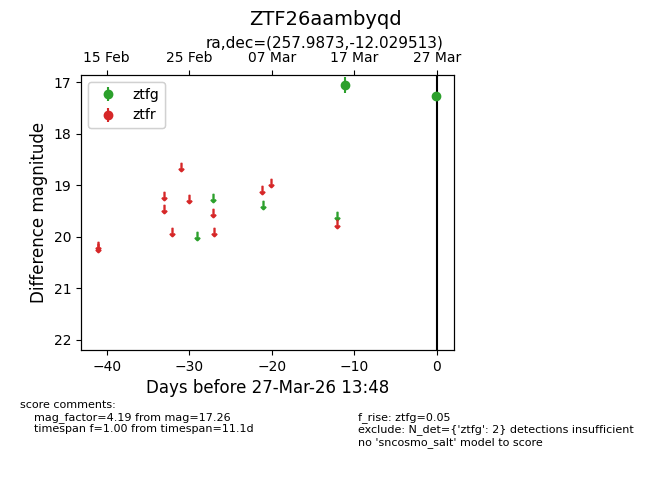
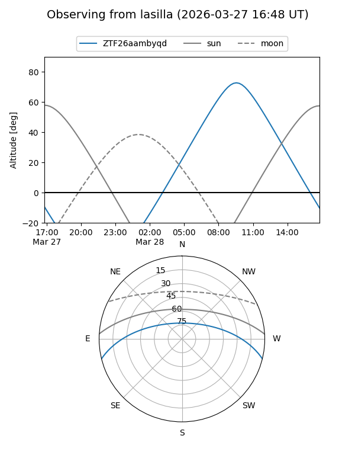
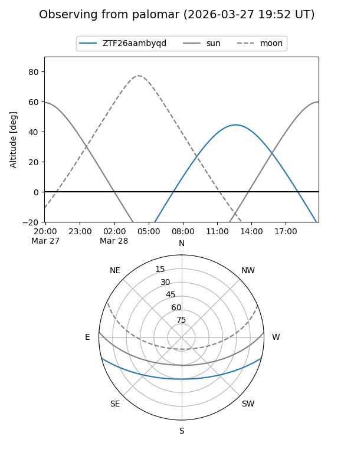

ZTF26aambyqd
Target ZTF26aambyqd at 2026-03-27 13:50
Aliases and brokers:
FINK: link
Lasair: link
ALeRCE: link
alt names
ZTF26aambyqd (ztf,fink_ztf)
Coordinates:
equatorial (ra, dec) = 257.9873,-12.02951
equatorial (HMS+DMS) = 17:11:56.94,-12:01:46.25
galactic (l, b) = (10.1284,+15.72802)
Flags:
Photometry:
last ztfg=17.26
2 ztfg detections
Lightcurve

Visibility


Additional plots